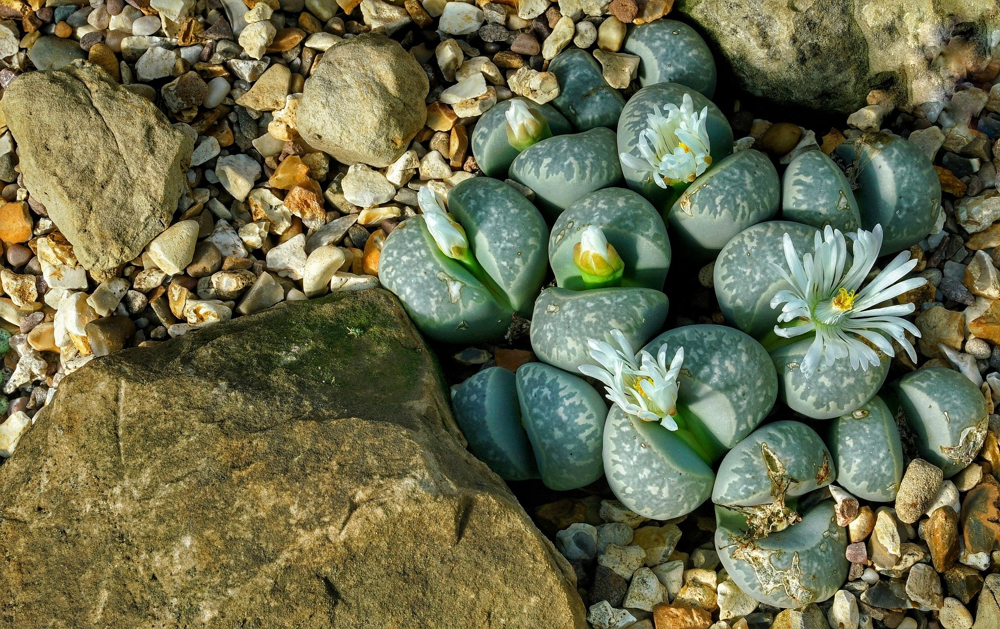
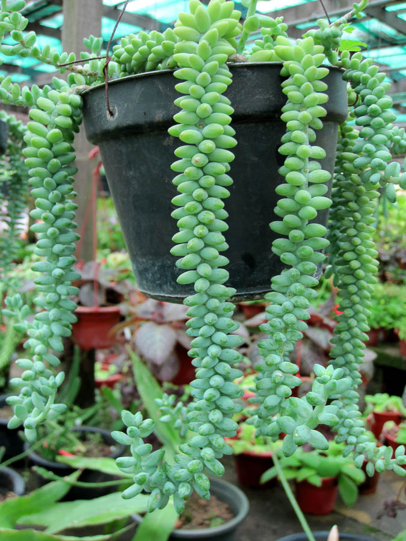
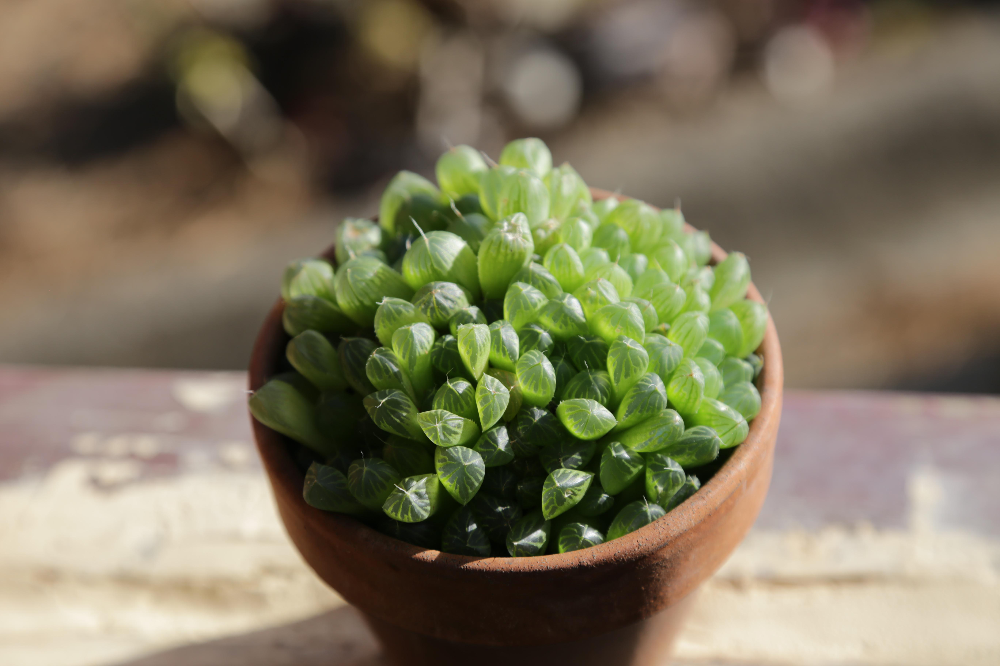

Otherwise known as living stones, these succulents are known for their unusual shape and come in a variety of colors
Their shape and colors allow them to mimic their stony, desert environment hiding them from herbivores
However, they are especially sensitive to overwatering and require very little water for their maintenance with a well draining and rocky soil mix.
Click here to learn more about Lithops
This plant is known for its trailing qualities with stems that grow downwards and adorned with fleshy leaves in a spiraling pattern.
Burro's Tail succulents do well in indirect sunlight and can be placed on a sheltered balcony as hanging decorations.
Fallen or plucked leaves from this plant can be placed back into the pot to grow into new stems.
Click here to learn more about the Burro's Tail
Referred to commonly as Haworthia or zebra succulent, this plant belongs to family of varied succulents and is known for its thick leaves that end in transparent tips giving it a unique appearance. These plants are propagated through offshoots that grow from the main plant
Click here to learn more about Haworthia Cooperi